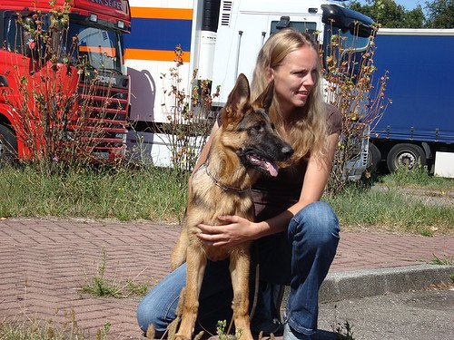

Hierbij vertel ik iets over mijzelf. Ik ben 40 jaar, heb 2 lieve kinderen van 9 en 11 jaar oud. We wonen met zijn drietjes in
het mooie Maastricht.
Bij ons wonen ook 2 honden, Dali van 6 jaar en Holly van 5 maanden. Het zijn Duitse herders en ze zijn allebei hier geboren.
We maken graag boswandelingen en stoppen dan regelmatig ergens om wat te drinken of een ijsje te eten.
Ik heb een fulltime baan bij de Universiteit Maastricht waar ik inmiddels alweer bijna 20 jaar werkzaam ben.